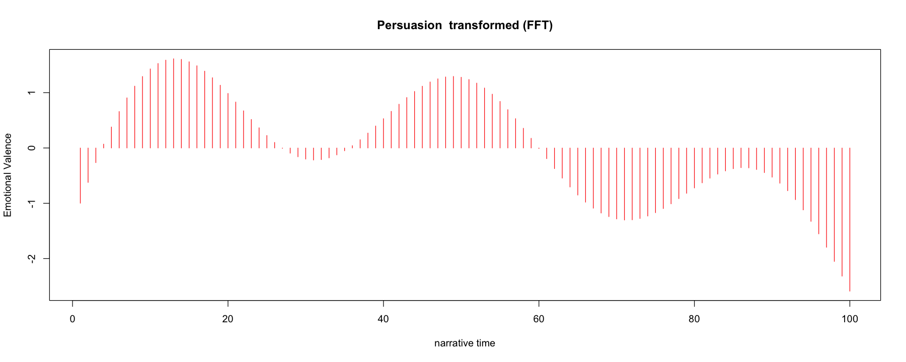
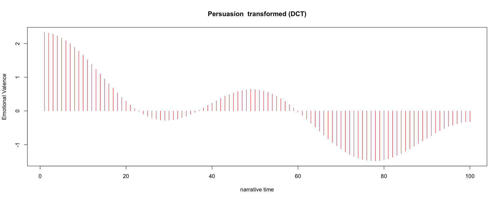

method = 'nrc' # methods = "syuzhet", "afinn", "bing", "nrc", "stanford"
fft_low_pass = 3
dct_low_pass = 6Metadata
Course: DS 5001
Module: 12 Lab
Topic: Running the Syuzhet Package in R with sentence lists
Author: R.C. Alvarado
Date: 12 April 2023 (revised)Notes
- Uses Jockers’ Syuzhet module in R.
- To use R in Jupyter, see https://docs.anaconda.com/anaconda/navigator/tutorials/r-lang/
Set Up
Configuration
Libraries
library(syuzhet)
library(tidyverse)── Attaching packages ─────────────────────────────────────── tidyverse 1.3.2 ──
✔ ggplot2 3.3.5 ✔ purrr 1.0.1
✔ tibble 3.2.1 ✔ dplyr 1.1.1
✔ tidyr 1.2.1 ✔ stringr 1.5.0
✔ readr 2.1.3 ✔ forcats 1.0.0
── Conflicts ────────────────────────────────────────── tidyverse_conflicts() ──
✖ dplyr::filter() masks stats::filter()
✖ dplyr::lag() masks stats::lag()options(repr.plot.width=15, repr.plot.height=6)Get Data
CORPUS = read_csv("..//data//syuzhet//combo-SENTENCES.csv", show_col_types = F)See if you can get the sentences for a given text.
pg105 <- CORPUS %>%
filter(book_id == '105') %>%
select(sent_str)# pg105[[1]]# pg105$sent_strDefine Main Function
plotitall <- function (this_book_id, book_title) {
sentences <- CORPUS %>%
filter(book_id == this_book_id) %>%
select(sent_str)
# Get the book and compute sentiment
book.sentiment_vector <- get_sentiment(sentences$sent_str, method=method)
# Plot the raw signal
plot(book.sentiment_vector,
type = "l",
main = book_title,
xlab = "Narrative Time",
ylab = "Emotional Valence")
# Get smoothed signal the old way
book.ft_values <- get_transformed_values(book.sentiment_vector,
low_pass_size = fft_low_pass,
x_reverse_len = 100,
scale_vals = TRUE,
scale_range = FALSE)
# Get smoothing signal the new way
book.dct_values <- get_dct_transform(book.sentiment_vector,
scale_vals = TRUE,
scale_range = FALSE)
# Plot the old
plot(book.ft_values,
type = "h",
main = paste(book_title, " transformed (FFT)"),
xlab = "narrative time",
ylab = "Emotional Valence", col = "red")
# Plot the new
plot(book.dct_values,
type = "h",
main = paste(book_title, " transformed (DCT)"),
xlab = "narrative time",
ylab = "Emotional Valence", col = "red")
}plotitall('105', 'Persuasion')Warning message in get_transformed_values(book.sentiment_vector, low_pass_size = fft_low_pass, :
“This function is maintained for legacy purposes. Consider using get_dct_transform() instead.”
